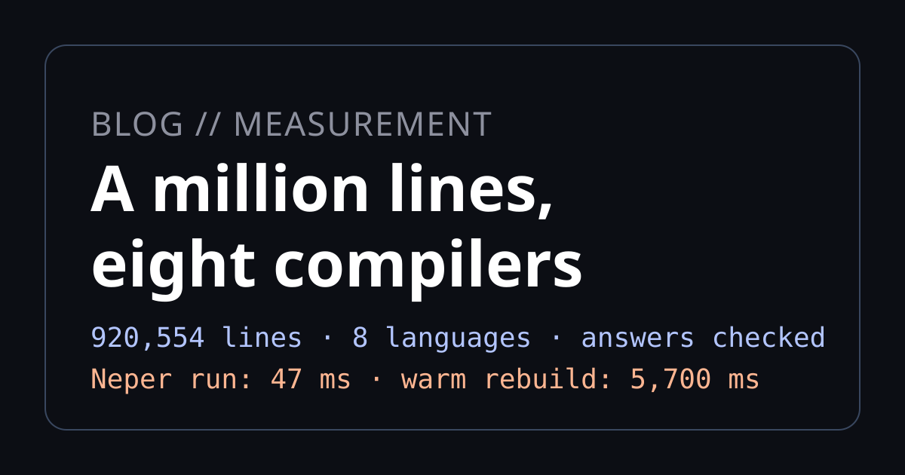

A million lines, eight compilers

Neper ships a scale benchmark that generates a million-line program and times the compiler on it. We ported that program to seven other languages and ran the same race in each: compile it, run it, check the answer. Neper finished with the fastest program and the smallest binary. Dart compiled it fastest. Zig never finished at all.
How we tested
The workload is sc1m, one of the standard sizes in benchmarks/baseline/, generated with the fixed seed so anyone can reproduce it byte for byte:
$ python benchmarks/scale/generate.py sc1m --modules 1000 --lines 1000000 --seed 1
# modules 1000, functions 82595, lines 920554; expected 108474335It is a DAG of 1,000 modules holding 82,595 functions. Each function loops over a small integer range, branches on the running value, mixes in a field of a record, and calls one function from an earlier module, so calls cross module boundaries and nothing is dead. main folds every module's first function through a checksum and prints it. The generator also computes the answer independently in Python, so every binary is checked against expected.txt (108474335), not against each other.
Neper compiled that tree as it is, through the self-hosted compiler:
$ neper build src/main.e --arena 4g --output neper-4g.exe
# the compiler itself, with room to hold the program: 24 s
$ neper-4g emit-executable src/main.e REPO x64 windows sc1m.exe --release --unchecked --cpu x64-v3 -j 8The other seven languages got flattened single-file ports of the same functions, constants, call graph and checksum (about 911,000 lines each; Python 829,000, denser syntax), produced by benchmarks/scale/port_sc1m.py. Every port's output was verified equal to expected.txt before its time counted. Four adaptations were needed to keep semantics exact:
- JavaScript and TypeScript use
% 1073741824instead of the& 1073741823bitmask. All values are non-negative and far below 253, so the two are identical, while a native&would truncate 36-bit intermediates to 32 bits. - Python sets
sys.setrecursionlimit(100000). Call chains run close to 1,000 deep; the generator's own oracle needs 20000. - Zig 0.16 prints through
std.debug.print(stderr). The 0.16 standard library movedstd.iotostd.Ioandstd.fs.Fileaway entirely, so the usual stdout spellings no longer exist; the harness captures merged streams. - Zig, Rust, Go, Dart are otherwise direct ports with 64-bit integers throughout.
The toolchains, on Windows x64 (16 logical cores, 16 GB RAM): Dart 3.12.2 (dart compile exe), Go 1.27.1 (go build), rustc 1.98.0 (-O), Zig 0.16.0 (build-exe -OReleaseFast), node 24.19.0 (--check), tsc 7.0.2 (es2020), CPython 3.12 (py_compile).
Two caveats before any numbers:
- Single samples. Each compile and each run below was timed once. These builds take minutes, so there are no medians here; treat close pairs as ties and the orders of magnitude as the signal.
- A contended box. A second benchmark suite and a 4.6 GB WSL instance shared the machine, and the system commit limit (31.4 GB) was the binding constraint more than once. Wall times are inflated for everyone; the ranking is the point.
Results
| Language | Lines | Compile (ms) | Run (ms) | Binary |
|---|---|---|---|---|
| Neper (warm, incremental) | 920,554 | 5,700 | 47 | 2.73 MiB |
| Neper (cold) | 920,554 | 23,600 | 47 | 2.73 MiB |
| Dart | 911,552 | 16,000 | 500 | 7.8 MiB |
| Go | 911,556 | 40,700 | 300 | 4.0 MiB |
| Rust | 911,552 | 63,400 | 400 | 4.9 MiB |
| Zig 0.16.0 | 911,554 | no binary after 65+ min | — | — |
| JavaScript | 911,550 | 400 (syntax check) | 400 | 19.2 MiB source |
| TypeScript | 911,550 | 7,800 | 1,900 | 24.5 MiB of JS |
| Python | 828,956 | 300 (bytecode) | 6,100 | 23.7 MiB of .pyc |
Where Neper wins
- The program it builds is the fastest and the smallest. 47 ms against the next-best 300 ms (Go), from a 2.73 MiB binary against Go's 4.0 MiB. No VM, no GC, no LLVM runtime in the image: the binary is the program.
- The warm rebuild beats every cold build. The second consecutive
--incrementalbuild takes 5,700 ms, a 6× reuse win over its own 34,600 ms first pass — the declaration-level incremental work from the design notes, measured. - Threads scale. Serial
--releaseis 38,400 ms;-j 4is 29,700 ms;-j 8is 23,600 ms. The remaining two thirds are the serial front end (lex, parse, check).
Where Neper doesn't
- Cold compile loses to Dart. 23,600 ms against 16,000 ms, on a box that flatters neither. The gap is the front end holding the whole program at once; the incremental path above is the answer, and it already works.
- It needed a bigger compiler to enter the race. The prebuilt compiler's 1 GB working arena tops out around 199,000 lines of dense code, so sc1m does not compile with it at all. Building the same compiler with
--arena 4gtook 24 seconds through the bootstrap and moved the ceiling past the million. A ceiling you raise with a flag is configuration, not architecture — but the default should say so before the error does. - Commit charge, not RAM, stopped two runs. Twice the build died in under ten seconds with the arena-exhausted error while “free RAM” looked adequate. The perf counters told the story: 26.7 of 31.4 GB committed system-wide. Flag order and output names were bisected as suspects and acquitted; controlled repeats passed. Measure the commit limit before any big build, ours included.
Zig 0.16.0 was given the file three times (20, 30 and 15 minutes) and never produced a binary. The monitored attempt pins one core at ~100% with a flat ~250 MB working set: a single-threaded CPU-bound spin in the frontend on 82,595 functions in one file, not thrashing and not LLVM slowness. Small files compile fine, including the stdout probes. The 911,554-line port is a ready-made repro; with 0.16's throughput on this shape at effectively zero, it is also the most useful result in the table for someone.
One asymmetry, disclosed
Neper compiled the true multi-module tree with real cross-module imports. Everyone else got one flat file with prefixed names and no module resolution to do. Single-file is the easier shape, so this comparison leans away from Neper on compile time — and Neper still takes the run column by 6×. We will take that trade.
Every number above comes from the generator and the porter in the repository:
$ python benchmarks/scale/generate.py sc1m --modules 1000 --lines 1000000 --seed 1
$ python benchmarks/scale/port_sc1m.py --src sc1m/src --out sc1m/portsRun them with your own toolchains. If your numbers disagree with ours, we want to know.